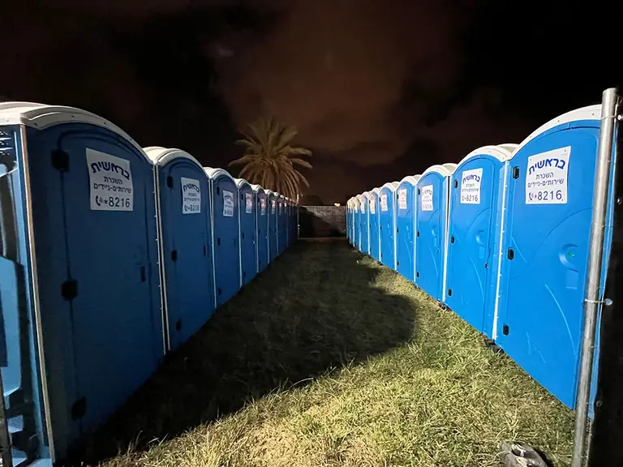

Mobile Toilets for Events with Advanced Maintenance
What are mobile toilets?

The Right Solution for Every Event: Mobile Toilets
You probably know them better by their common name: chemical toilets. Toilets are not usually a popular topic of conversation, but like other products tied to the basic infrastructure of our lives, we do not think about them or talk about them, yet woe betide us if we find ourselves without them.
When you hold an event outdoors, in the open air, in the field, you picture the scenery, the atmosphere, the people who will gather, the excitement. But do you also think about the moment when one of you needs to relieve themselves?
Mobile toilets are a service worth taking into account if you are planning a celebration such as a wedding, or a camping gathering and the like, taking place in the field, somewhere that is not an organised site with built infrastructure.
For the Benefit of Your Guests
Renting mobile toilets for outdoor events is a must. Whether it is a huge event with a very large number of participants or a smaller one, every outdoor event justifies renting mobile toilets. These toilets are available to guests right next to the event location; they are attractive, clean and also comfortable. All the toilets we supply give off a pleasant scent, are hygienic and, of course, we make sure to send them to you clean and shiny. You can rent many toilets and place them in different spots outdoors, or rent a single unit, which is usually more relevant for small, limited events. Remember that when you order several mobile toilet stalls, the price of the service will be more accurate if you order according to the number of guests you plan to invite.
Whether it is festivals, large concerts, nature parties or even weddings, for any type of event mobile toilets are undoubtedly the right solution. In recent years, people choose to hold various events, both private and commercial or business, in open spaces in order to make use of the large area and the atmosphere such a location offers. Unlike a closed hall, when you choose to hold an event in the open air, the facilities required are naturally mostly missing, and you must arrange them in advance to create a comfortable and pleasant environment for invitees and participants. One of the advantages of renting mobile toilets is the service's ability to provide the exact answer for every style and type of event, as well as the option of renting the required quantity, taking the number of invitees into account.
Combining Additional Elements
For those who wish, you can add stand-alone hand-wash taps to your mobile toilet order, which can be placed right next to the mobile toilet units. At these taps, guests can wash their hands after using the toilets and return to the event. The taps are completely self-contained, and using them in the field requires no special equipment or any infrastructure. This is a convenient, high-quality solution that can be rented for any production and any event held in the open air. We strongly recommend also renting accessible toilets in order to serve all guests.
How Much Does Mobile Toilet Rental Cost?
True, chemical toilet rental has a price, but it may pleasantly surprise you. In addition, when renting chemical toilets for events, the price of the service is worth the avoidance of the distress that may be caused when guests have no toilets to go to. When you order toilet rental for events, the price of the service varies according to the type of toilets you order and the quantity. When ordering mobile toilets for rent, the price of each stall depends on its type: is it standard or luxury? There is a price for an accessible stall, and so on.
The higher the cost of the event you are holding, the smaller the share of the total costs that the mobile toilets order will be.
Imagine an enjoyable event, a wonderful atmosphere, a lot of joy, and then someone asks "Excuse me, where are the toilets?", and there are none. All the joy, all the atmosphere, all of it goes down the drain, and what people will remember from the event is the poor soul who had nowhere to go. You do not want that, do you?
When the time comes to plan an event, take the matter of toilets into account.
Are you about to hold an event soon? Have you thought it through, checked, and want to rent mobile toilets for your event? If so, Bereshit is the right address to turn to. The company offers you various models of mobile toilets that can be rented for productions in nature, in the open air, or anywhere else where there is no ready infrastructure, and of course the number of mobile toilet stalls in the order can be adjusted for events of different sizes. You can choose from all the options available on our website, and you are of course welcome to call us at *8216 and we will be happy to advise you and help you choose the options best suited to your event.
Related links
For a quote, call *8216, or leave your details on the Contact page. Advice and quotes with no obligation.